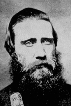

|

|

|
|
|
Confederate general John Bell Hood was born to a prominent
family in rural Owingsville, Kentucky on June 29, 1831.
Hood's parents had high expectations for him. At West Point,
Hood proved a mediocre student and barely managed to
graduate. Robert E. Lee commented that "Hood is a bold
fighter...very industrious on the battlefield, careless off...I
am doubtful as to the other qualities necessary."
Confederate President Jefferson Davis nonetheless selected
Hood to command the Army of Tennessee in July 1864. Lee's
evaluation, however, proved both accurate and prophetic.
Despite his early successes at the brigade and divisional
levels, Hood was unable to meet the challenges of higher
responsibility. Hood's battlefield errors destroyed the
Army of Tennessee and ruined Confederate aspirations in the
West. Perhaps no other commander during the Civil War
experienced such adulation only to be followed by utter
disgrace.
The outbreak of the Civil War found 1st Lieutenant Hood
in Texas, serving with the 2nd Calvary. After resigning his
U.S. Army commission, Hood traveled east as a Confederate
Major in the 4th Texas Infantry Regiment. Over the next
five months Hood's aggressive fighting earned him the favor
of President Davis and a promotion to colonel, in command of
his Regiment. When the position of brigade commander became
available in March 1862, Hood was elevated to Brigadier
General.
Hood's reputation continued to grow as he and his "Texas
Brigade" impressed Generals Robert E. Lee and "Stonewall"
Jackson with outstanding performances at the battles of
Gaines Mill, Second Manassas, and Antietam. Promotion to
Major General followed and Hood and his Texans became heroes
throughout the South.
A ferocious fighter, Hood's reputation continued to grow.
At the battle of Gettysburg in July 1863 his left arm was
permanently disabled during the assault on the Devil's Den.
The following September, Hood's division spearheaded General
Longstreet's successful attack at Chickamauga, Georgia.
Hood was again seriously wounded, losing his right leg. His
bravery was recognized a few weeks later with a promotion to
lieutenant general when he returned to Richmond. During
this time Hood became a close confidant to Jefferson Davis,
a friendship that would yield negative consequences for
their nation.
Requesting reassignment, Hood was appointed a corps
commander under General Joseph Johnston in the Army of
Tennessee. As Sherman pushed the Confederates south through
Georgia, Hood used his influence with Jefferson Davis to
argue for Johnston's removal, making the case that he, Hood,
would conduct a more aggressive campaign. Davis eventually
acquiesced, naming Hood commander of the Army of Tennessee
in July 1864.
Hood lost no time in taking the initiative - with
disastrous results. Suffering the loss of one third of his
army in a series of reckless assaults on General William T.
Sherman's army, Hood was forced to abandon Atlanta by late
August of 1864. As Sherman embarked on his famous march to
the sea, Hood led his army in the opposite direction,
intending to threaten Sherman's supply lines in Tennessee.
After missing an opportunity to destroy a portion of General
George H. Thomas' forces at Spring Hill, Tennessee, Hood
recklessly threw his army against the Federals at Franklin,
Tennessee on November 30, 1864. Suffering crippling
casualties, Hood would not give up his campaign. Instead he
moved to Nashville with a force that was no longer adequate
to the task. On December 15th and 16th Thomas attacked and
destroyed the Army of Tennessee. Hood was relieved of
command at his own request and returned to Richmond in
February 1865.
After the War, Hood established an insurance business in
New Orleans, where he married and had eleven children. In
the mid-1870's his business failed and a yellow fever
epidemic swept through New Orleans, taking his wife and
eldest daughter before claiming the general himself on
August 30, 1879 at the age of 48.
Source: Joan Waugh, ed., Facts on File Encyclopedia of American
History: Civil War and Reconstruction, 1856 to 1869 (New York: Facts on
File, 2003), 171-172.
|